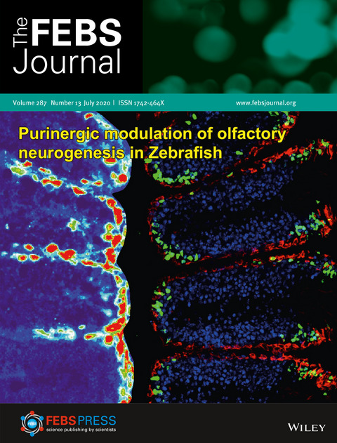

Background
Click the sections below to expand.
Highschool: İstanbul Erkek Lisesi
İstanbul Erkek Lisesi is one of the most prestigious high schools in Turkey.
Its Germany-based style of education provides the students with a skill set which prioritizes critical thinking and problem solving.
I graduated İstanbul Erkek Lisesi with an Abitur, which is equal to what a German student obtains after graduating the highest tier high school in Germany.
Undergraduate: Middle East Technical University
METU is one of the highest ranking universities in Turkey -3rd in 2023. My major here was biology.
During my undergraduate education in METU I focused on learning as much as possible on a wide variety of topics.
In the last two years of my studies I was hooked to immunology greatly because of wonderful classes by Mayda Gürsel. I completed many grad-level immunology courses with best scores in the class.
In addition to immunology, I learned recombinant DNA techniques and transitioned into molecular biology.
MSc
Explanatory text for MSc.
PhD
Explanatory text for PhD.
Publications
Purinergic signalling selectively modulates maintenance but not repair neurogenesis in the zebrafish olfactory epithelium
FEBS Journal, 2019
Zebrafish olfactory epithelium is a dynamic environment where neurons are constantly lost and generated. Since extracellular ATP is a strong damage associated molecular pattern, we investigated the possible role of purinergic signaling in stem cell regulation upon neuronal loss and found out that indeed exposure to extracellular ATP, in a purinergic receptor dependent manner, causes stem cells to generate olfactory neurons.
DOI: 10.1111/febs.15170
Patterned Arrangements of Olfactory Receptor Gene Expression in Zebrafish are Established by Radial Movement of Specified Olfactory Sensory Neurons
Scientific Reports, 2017
Commonly, olfactory receptor gene expression is spatially organized in the olfactory epithelium. However, the mechanism of this phenomenon is not well understood. We found out that olfactory neurons with specific receptor gene expressions are generated by stem cells which reside in specialized proliferation zones and move inwards into the zebrafish olfactory epithelium in time which results in a patterned arrangement of olfactory receptor gene expression.
DOI: 10.1038/s41598-017-06041-1Contact
Contact me at uguraltcizgican(at)gmail.com